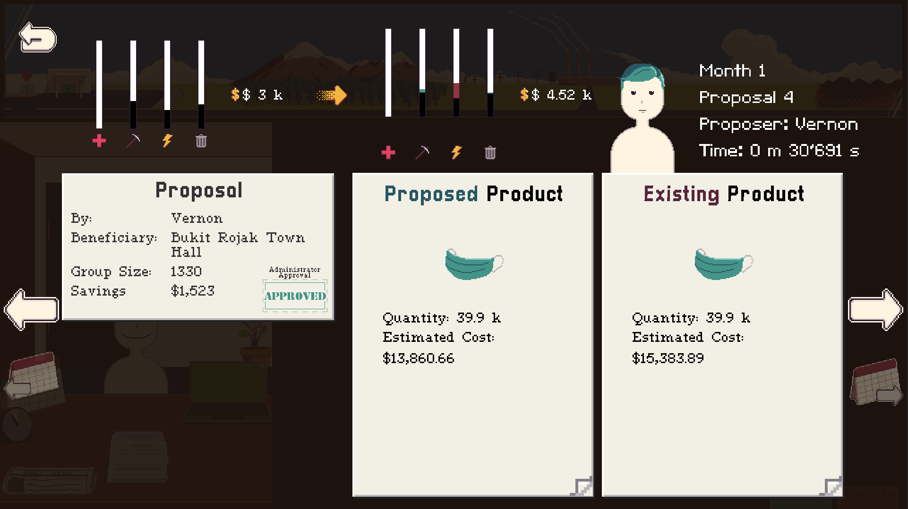
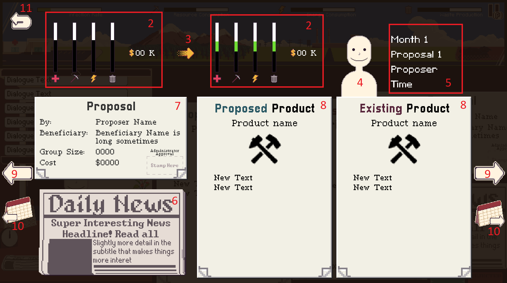
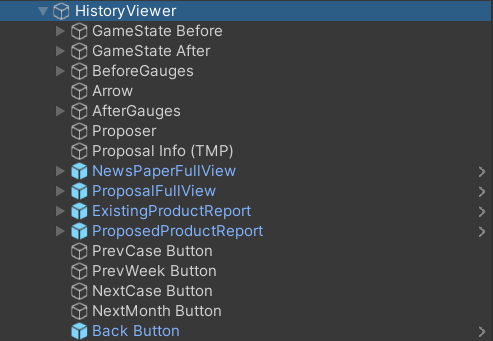

The History Viewer Menu

The History Viewer Menu is available to players at the end of the level, and also when the game is paused. It allows players to review their past decisions and see their effects.
Functionally, the History Viewer is similar to the DocumentManager in that it takes a Proposal and updates UI objects to show the right information. However, it differs in the sense that it also uses extra information like the game state resulting from the decision of the proposal. These information, along with the proposal, are contained in the DecisionRecord class of objects. A collection of DecisionRecords make up a LevelRecord and a list of LevelRecords make up a History.
Scene Hierarchy
 
GameState Before/After- the GameStates representing the before and after of a player's decisionsBefore/After Gauges- the UI elements displaying the before/after GameStatesArrowProposerProposer Info (TMP)NewsPaperFullViewProposalFullViewProposed/Existing ProductReportPrev/Next Case ButtonPrev/Next Month ButtonBack Button